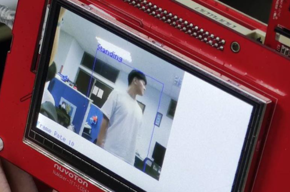
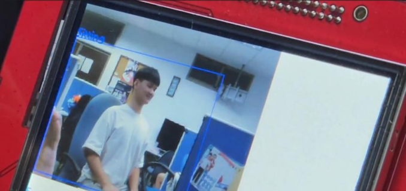
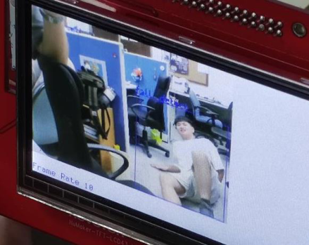
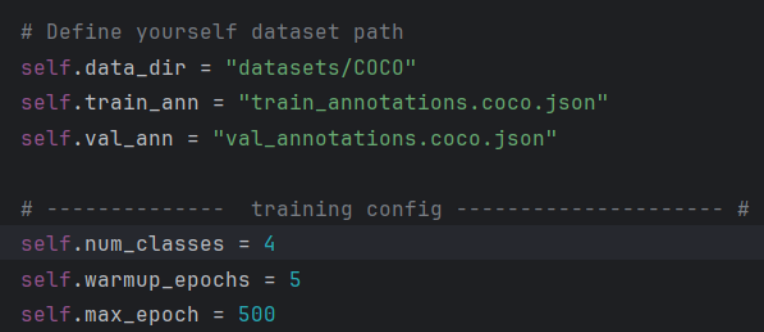
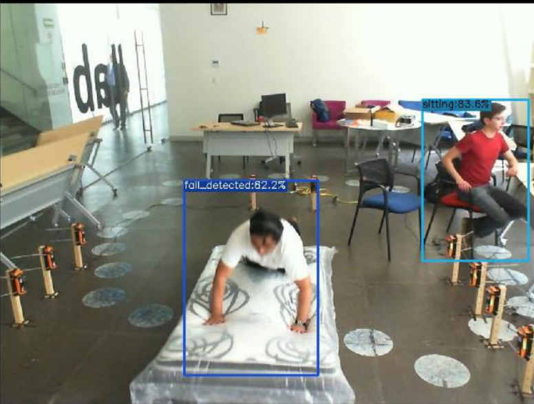
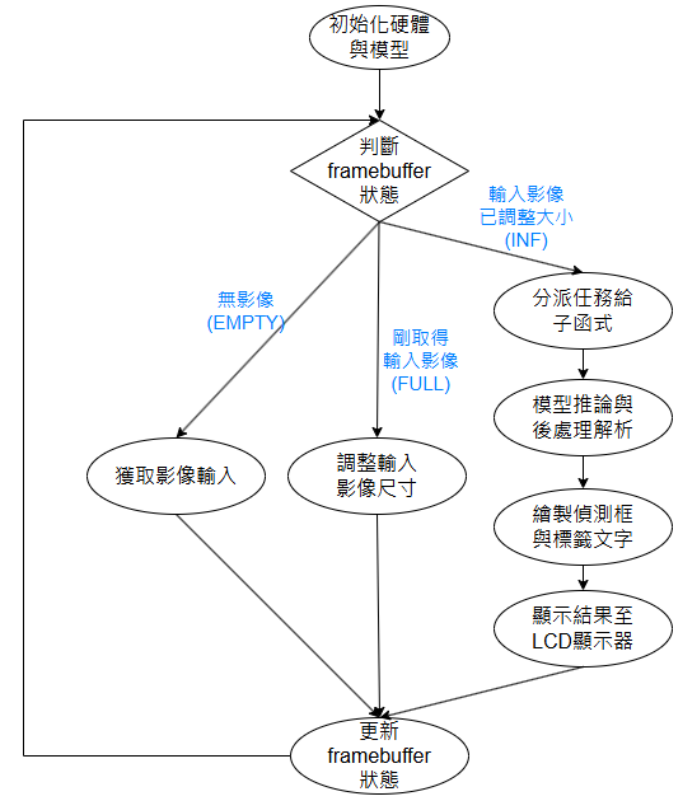
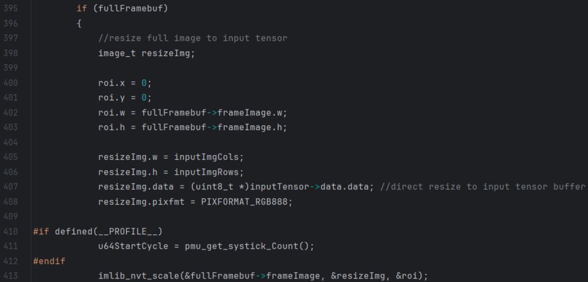
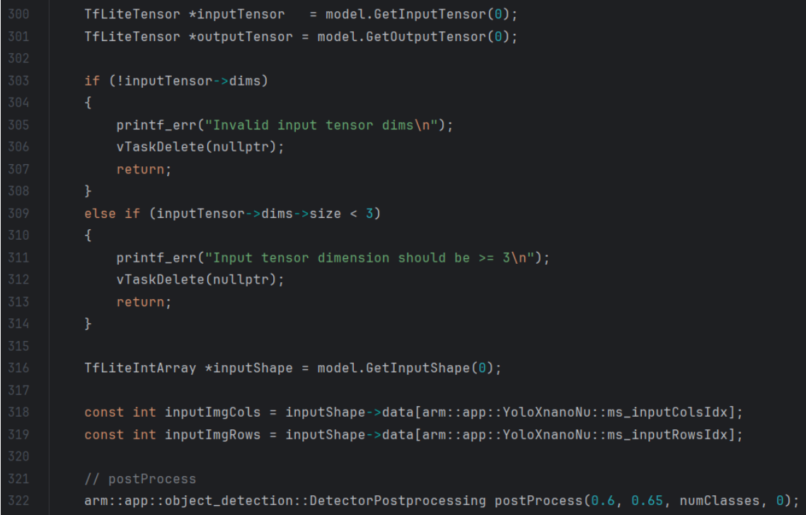
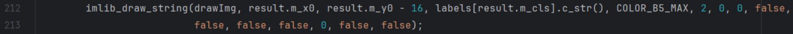

- 주제: M55M1 보드에서 Fall-detected, sitting, standing 3가지 자세를 구분하는 낙상 감지 데모
- 데이터셋: Roboflow Universe의 Fall Detection Dataset
- 모델: YOLOX-Nano, PyTorch 학습 후 ONNX/TFLite/Vela를 거쳐 배포
- 정확도: 테스트 104장 기준 보고값 90.3%
| 대목차 | HTML 반영 내용 |
|---|---|
| 사례 소개 | 프로젝트 요약과 3가지 자세 정의 |
| 기술 종류 소개 | Keypoint-detection vs Object-detection |
| Roboflow 데이터셋 | Fall Detection Dataset과 클래스/분할 수 |
| PC 학습 | Anaconda, 데이터 구조, config 수정, ONNX/TFLite/Vela |
| 보드 추론 | Frame buffer 상태와 추론·후처리·LCD 출력 |
| 결론과 미래 | 정확도, 효과, 향후 3D 카메라/Keypoint 확장 |
M55M1 개발 보드가 사람의 세 가지 자세인 Fall-down, sitting, standing을 판별하는 구조입니다.. 데이터셋은 Roboflow에서 확보하고, PyTorch에서 YOLOX-Nano를 학습한 뒤, 모델 변환과 경량화를 거쳐 TensorFlow Lite 및 Vela 결과물로 만든 다음 KEIL을 통해 보드에 탑재합니다.
의료 인력 부담을 줄이고 긴급 상황을 더 빠르게 감지하는 것이 이 프로젝트의 목적입니다.
| 항목 | 내용 |
|---|---|
| 클래스 | Fall-detected / sitting / standing |
| 데이터셋 크기 | Train 731 / Valid 208 / Test 104 |
| 모델 파이프라인 | PyTorch → ONNX → TensorFlow Lite → Vela |
| 배포 환경 | KEIL로 C 코드와 모델을 함께 플래시 |



- Keypoint-detection은 인체 관절과 사지 상태를 라벨링하므로 자세 인식 정확도는 높지만, 라벨링이 복잡하고 더 많은 데이터가 필요합니다.
- Object-detection은 대상만 박스로 둘러싸고 자세 종류를 붙이면 되므로 상대적으로 단순합니다.
- 이번 사례처럼 Fall-detected, sitting, standing처럼 자세 차이가 큰 경우에는 Object-detection만으로도 충분한 정확도를 낼 수 있다고 설명합니다.
자세 변화 차이가 작은 응용에는 Keypoint 방식이 더 적합할 수 있지만, 이번 프로젝트는 구현 난이도와 정확도를 함께 고려해 Object-detection을 채택했다고 정리합니다.
- Roboflow Universe에서 Fall Detection Dataset을 찾습니다.
- 다운로드 형식은 COCO JSON이며, 바로 PyTorch 학습에 사용합니다.
- 분류 대상 클래스는 Fall-detected, sitting, standing 세 가지입니다.
- 데이터 수는 Train 731장, Valid 208장, Test 104장입니다.
Python 3.12 기반의 Anaconda 가상환경을 먼저 만든 뒤, pip 업그레이드, PyTorch 설치, MMCV 설치, requirements 설치, YOLOX 개발 모드 설치 순으로 진행합니다.
conda create --name yolox_nano python=3.12 conda activate yolox_nano python -m pip install --upgrade pip setuptools python -m pip install torch torchvision torchaudio --index-url https://download.pytorch.org/whl/cu118 python -m pip install mmcv==2.0.1 -f https://download.openmmlab.com/mmcv/dist/cu118/torch2.0/index.html python -m pip install --no-input -r requirements.txt python setup.py develop
데이터셋은 Datasets/<your_datasets_name>/ 구조로 정리합니다. 학습 설정 파일 yolox_nano_ti_lite_nu.py 안에서 훈련/검증 데이터셋 위치와 훈련 설정을 지정하고, coco_classes.py에서 클래스 정의를 맞춥니다.
Datasets/
<your_datasets_name>/
annotations/
<train_annotation_json_file>
<val_annotation_json_file>
train2017/
<train_img>
val2017/
<validation_img>
# coco_classes.py
(none, fall-detected, sitting, standing)
python tools/train.py -f exps/default/yolox_nano_ti_lite_nu.py -d 1 -b 64 --fp16 -o -c pretrain/tflite_yolox_nano_ti/320_DW/yolox_nano_320_DW_ti_lite.pth반복 횟수 500회 기준 약 3시간이 걸린다고 설명하며, 적절한 epoch 조정이 필요하다고 덧붙입니다.


PyTorch에서 학습한 YOLOX-Nano 모델은 테스트 이미지 104장 중 10장만 오검출 또는 미검출이 발생해 90.3% 정확도를 기록했다고 보고합니다.
python tools/export_onnx.py -f exps/default/yolox_nano_ti_lite_nu.py -c YOLOX_outputs/yolox_nano_ti_lite_nu/latest_ckpt.pth --output-name YOLOX_outputs/yolox_nano_ti_lite_nu/yolox_nano_nu_fall.onnx python demo/TFLite/generate_calib_data.py --img-size 320 320 --n-img 200 -o YOLOX_outputs\yolox_nano_ti_lite_nu\calib_data_320x320_n200.npy --img-dir datasets\COCO\train2017 onnx2tf -i YOLOX_outputs/yolox_nano_ti_lite_nu/yolox_nano_nu_fall2.onnx -oiqt -qcind images YOLOX_outputs\yolox_nano_ti_lite_nu\calib_data_320x320_n200.npy "[[[[0,0,0]]]]" "[[[[1,1,1]]]]"
경량화된 모델을 vela\generated\에 놓고 variables.bat를 수정한 뒤 gen_model_cpp를 실행하라고 설명합니다. 출력은 yolox_nano_ti_lite_nu_fall_full_integer_quant_vela.tflite.cc입니다.
set MODEL_SRC_FILE=yolox_nano_nu_fall_full_integer_quant.tflite set MODEL_OPTIMISE_FILE=yolox_nano_nu_fall_full_integer_quant_vela.tflite # output vela/generated/yolox_nano_ti_lite_nu_fall_full_integer_quant_vela.tflite.cc
C 언어 기반 추론 시스템이 하드웨어/모델 초기화, Frame buffer 상태 판정, 상태 갱신의 반복 구조로 동작한다고 설명합니다. 즉, 각 프레임은 상태에 따라 다른 작업을 수행하며 파이프라인이 순환합니다.

- 버퍼 크기와 포맷을 설정합니다.
- 모든 Frame buffer 상태를 EMPTY로 초기화합니다.
- 이 상태는 새 이미지를 안전하게 저장할 수 있음을 뜻합니다.
- 카메라로 이미지를 캡처하거나 내장 이미지를 불러옵니다.
- 새 이미지가 준비되면 Framebuffer 상태를 FULL로 바꿉니다.
- 입력 이미지를 모델 요구 크기로 조절합니다.
- 전처리 완료 후 Framebuffer 상태를 INF로 변경합니다.

대기 중인 추론 이미지는 관련 하위 함수로 분배됩니다. 이 단계에서 추론, 후처리, 물체 검출 박스 그리기, LCD 출력, Framebuffer 상태 복원이 하나의 작업 묶음으로 처리됩니다.
- 모델 입력 텐서를 가져옵니다.
- 실제 추론을 수행합니다.
- 출력 텐서를 읽고 후처리로 결과를 해석합니다.

- 추론 결과에서 필요한 정보를 추출해 박스와 라벨을 그립니다.
- 완성된 이미지를 LCD 디스플레이에 출력합니다.
- 출력이 끝나면 Framebuffer를 다시 EMPTY로 돌려 다음 프레임을 준비합니다.

결론은 낙상 감지 시스템이 Roboflow 데이터셋과 YOLOX-Nano를 기반으로 M55M1 보드에서 빠르고 인력 소모를 줄이는 방식의 낙상 탐지를 구현했다고 정리합니다. Full-INT8 양자화와 Vela 최적화 덕분에 90% 이상의 정확도를 확보했고, 향후에는 3D 카메라나 Keypoint-detection으로 자세 종류와 정확도를 더 높일 수 있다고 제안합니다.